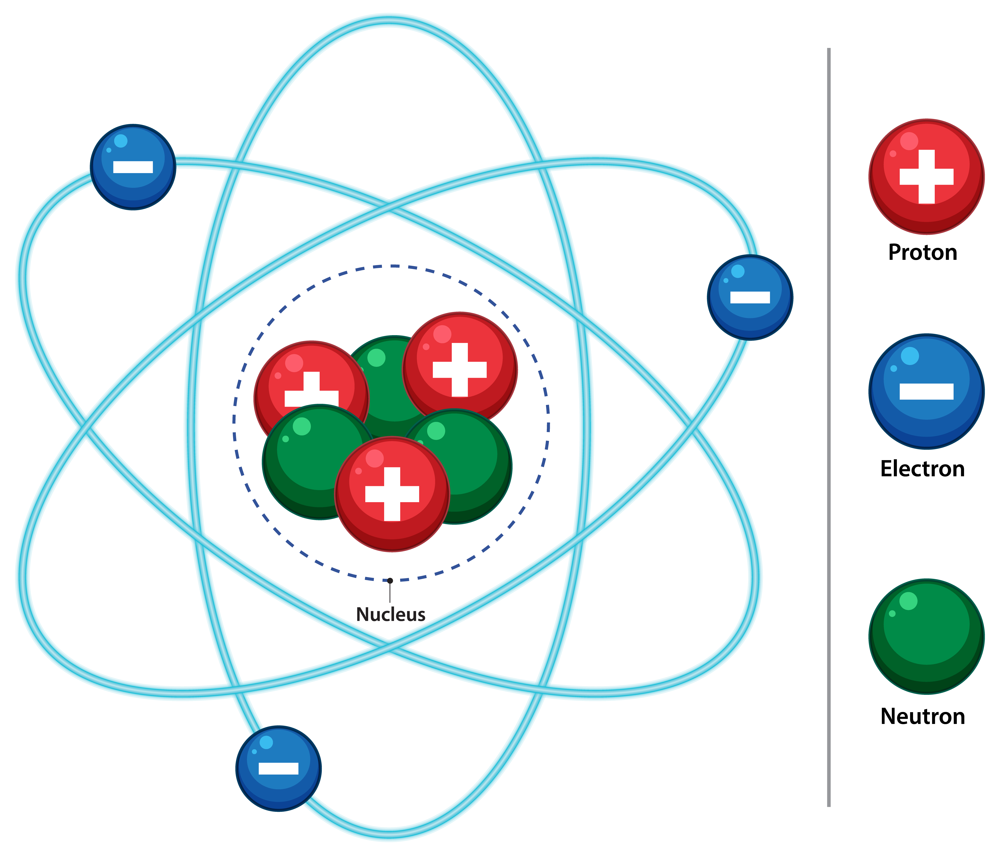
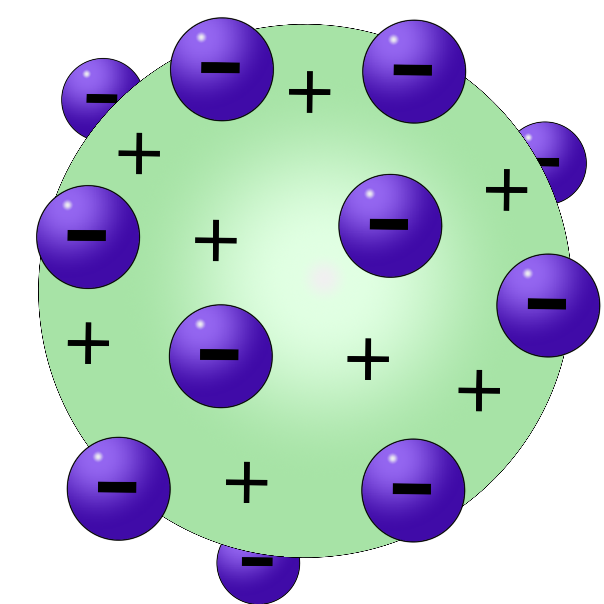

Thomson’s “Plum pudding” Model (1897):
For years scientists had known that if an electric current was passed through a vacuum tube, a stream of glowing material could be seen, however, no one could explain why.
Thomson found that the mysterious glowing stream would bend toward a positively charged electric plate. He theorised, and this was later proven correct, that the stream was in fact made up of small particles, pieces of atoms that carried a negative charge. These particles were later named "electrons".In this experiment, many substances were found to emit negative charged (electrons) and because it was known that atoms are neutral (e.g. contain the same number of positive and negative charges), Thomson concluded that “the atom consists of a sphere (or cloud) of positive charges in which the negative charges area evenly distributed” e.g like raisins in a plum pudding. (honestly yuckk)
Unfortunately, there was a problem of demonstrating that the atom possessed a uniform positive background charge, which came to be known as the ‘thomson problem'. Five years later, the model would be disproved by Hand Geiger and Ernest marsden, who conducted a series of experiment use who conducted a series of experiments using alpha particles and gold foil.
In what would come to be known as the "gold foil experiment", they measured the scattering pattern of the alpha particles with a fluorescent screen. If Thomson's model were correct, the alpha particles would pass through the atomic structure of the foil unimpeded. However, they noted instead that while most shot straight through, some of them were scattered in various directions, with some going back in the direction of the source.
Ernest Rutherford's Gold Foil Experiment (1909):
Leading further into Rutherford's experiment, Ernest Rutherford carried out some experiments (continuing from Thompson's to test his experiment) which led to a change in idea around an atom.
His model was that an atom was seen to be like a mini solar system where the electrons orbit the nucleus like planets orbiting around the sun. A simplified picture of this is shown alongside. This model is sometimes known as the planetary model of an atom.
In 1911 Rutherford set out to test Thomson's model. He decided that if Thomson's model of an atom was correct, when radioactive decay particles called (alpha particles) are fired at an atom, as they pass through the atom they will be scattered in a uniform pattern e.g they will pass straight through with little or no deflection.
The evenly distributed positive and negative charges should cause the alpha particles to pass through undeflected or deflected slightly in a uniform pattern. Rutherford fired a beam of alpha particles at a thin sheet of gold foil (about 1000 atoms thick ). The path of the alpha particles after striking the gold foil was detected by the scintillations (flashes of light) they produced on a glass screen coated with zinc sulfide and fixed onto a rotatable microscope.
From his experiment he observed that : Most of the alpha particles passed through the foil without much deflection. A few of the alpha particles were scattered very widely Rarely did an alpha particle fail to pass through the foil. The alpha particle “bounced back” These observations proved that Thomson’s model was wrong and allowed Rutherford to put forward the current accepted model of an atom.
Big thank you for texts and media to:
pixabay.com, magnific.com, universetoday.com, Britannica.com, scienceholic.org, interest.com, bbc.co.uk/bitesize, Current vice president of Hamilton girls high school (Mr C. Scrimgeour).Thanks for stopping by! Hope you learned something new :)
Website made by Jomi Omoyeni.
Contact me; jom24600@my.hghs.school.nz.
*If you found texts or images that belongs to you and you haven't been given credit, deepest apologies. Please do contact me so you can be added to the credit list :).